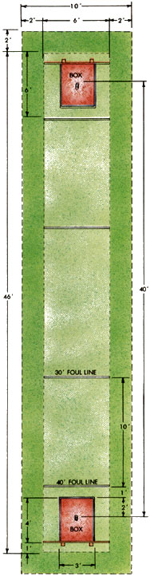

The Gentle Art & Sport Of Horseshoes
A look at this ancient game still played solely for fun, including rules and scoring, the pitch, levels of perfection, court layout and how to build Mother's old-fashioned horseshoe court.
By Terry Krautwurst
July/August 1988
Issue # 112 - July/August 1988
By Terry Krautwurst
Crrr-ING. What the sound of a can opener is to a cat, the resonant chime of a horseshoe striking a steel stake is to me. Give me that sound, and I will search out its source and stand pathetically on the sidelines until someone orders me of or invites me in. I love pitching horseshoes, not because I'm particularly good at it-I'm not-but because it is all the things I want in a game. It is simple and straightforward, yet challenge enough to allow me some pride in a good pitch and an excuse in a lousy one. It can be played either alone or with other people, perfect for a sometimes-social, sometimes-hermit person like myself. It is a friendly, leisurely sport, but one that is always, in the end, a contest. No insipid "ungame," horseshoes is played to be won, whether in good fun or fierce competition. It is also portable and inexpensive, requires no particular athletic prowess and can be played almost anywhere, by almost anyone, young or old.
No wonder, given the game's democratic nature and competitive spirit, that pitching horseshoes is at least as proverbially American as apple pie and 4th of July fireworks. According to the National Horseshoe Pitchers' Association (NHPA, Box 278, Munroe Falls, OH 44262), some 30 million of us enjoy the game. We play it in our back yards, at picnics, behind gas stations and firehouses, in churchyards and prison yards, in summer camps and retirement communities, and just about anywhere else there's enough room to pound a couple of pieces of pipe into the ground and throw horseshoes at them. Our greatgrandparents played the game, and chances are our great-grandchildren will, too.
Sports historians, in fact, figure that the game of horseshoes was invented some 2,000 years ago, only shortly after the invention of horseshoes themselves. The prevailing theory is that Roman foot soldiers, following mounted troops and thus no doubt accustomed to watching carefully where they planted their feet, picked up castoff horseshoes and used them as substitute quoits. You have to reach back a few hundred years earlier to know about quoits. That game was played by tossing a heavy, flattened metal ring-a real quoit-at, and with any luck onto, a peg. The soldiers simply used horseshoes instead.
Before long, throwing horseshoes at a stake became a game of its own. Both quoits and horseshoes were played in eighteenthcentury Europe, with horseshoes generally viewed by the rich and noble as a vulgar, poor man's version of the proper and genteel game of quoits. Ever eager to thumb their noses at aristocrats, American colonists played horseshoes almost exclusively, making the game somewhat a symbol of the common citizen. "The colonial War of Liberation," sniffed the Duke of Wellington, "was won on the village greens by pitchers of horse hardware." Tut, tut, Duke; let's not be a sore loser.
For the next century and a half, the game was played with real just-off-the-animal horseshoes. If you ever get a chance to try doing the same, don't, for your hand's sake. Throwing the real thing, complete with burrs and nail holes, is akin to tossing around a particularly nasty scratching, biting rodent. The other trouble with real shoes is that they, like the horses that wear them, come in different sizes. There is no fun in throwing Shetland pony shoes against an opponent pitching Clydesdales.
Mercifully, along about 1920 sporting goods manufacturers started making standard-size, smooth-surface pitching horseshoes. The current regulation maximum dimensions specify a length of 7 5/8 inches, a width at the opening of 3 1/2 inches and a weight of two pounds, 10 ounces. Today you can choose from more than a dozen different brands of pitching shoes, and at least three dozen NHPA-approved styles, each offering a different combination of grip, hardness of steel, hook design and overall "feel." Serious players will try most of them and pay up to $75 a pair for the ones they like. But even discount-store "picnic" shoes (about $20 for a set of four, with stakes) are nicely balanced and more than adequate for the casual pitcher.
If you have the space and intend to pitch shoes regularly, you may want to build a permanent court, like the one in the accompanying sidebar, "MOTHER'S Old-Fashioned Horseshoe Court." But for a Sunday afternoon game, all you really need are the horseshoes, a couple of one-inchdiameter steel stakes and a place to poke them in the ground 40 feet apart. (An area 50 or 60 feet long and six or seven feet wide will give you lots of room.) Just loosen the dirt down to six or more inches deep around each stake so the shoes won't bounce too much. The peg should be in the approximate center of the pit and should stick up 12 to 14 inches above ground, with a slight slant toward the opposite stake. If you want to get fussy, make the pit three feet wide and anywhere from four to six feet long, and mark a foul line three feet in front of the stake. Women, and kids 17 and under, get to pitch from just 30 feet stake to stake, so if you need to, mark another set of foul lines 10 feet in from the others.
Rules and Scoring
It's easy to grasp the fundamentals here: One player throws two shoes at the stake at the opposite end. Then the other player throws two shoes at the same stake. That's an inning. Now you both walk to the far side, figure the score, pick up your shoes and throw them back again. And so on till one of you reaches an agreed-upon winning score.
You get three points for a ringer, one point for close (six inches or less from the stake), zero for anything else. Ties cancel each other out. In other words, if you both throw a ringer, neither of the ringers counts. If you throw two ringers and your opponent throws one, you get three points for the unmatched ringer. If you both throw one shoe that lands within six inches of the stake, only the closest shoe scores a point. If they're both touching the stake or exactly the same distance from it, neither of you gets a point. If your two shoes are both within six inches of, and closer to, the stake than your opponent's, you get two points. In no case do both players score in the same inning.
A couple of other important principles: 1) At the beginning of a game, flip a coin or horseshoe to see who pitches first. For the remainder of the game, whoever scored the most points the previous inning throws first the next inning; if neither of you scored, the player who pitched last goes first. 2) If you're taking the game seriously, any shoe thrown by a player who steps over the foul line, and any shoe that bounces out of the pit area or against a backboard, doesn't count, regardless of where it eventually comes to rest.
Also, if you want to save yourselves some walking, find two other players, put them at the opposite end of the court, and have them throw the shoes back on alternate innings. Choose one of the players as your partner, and add to your score whatever points your teammate throws; likewise for your opponent.
In official tournaments, a game consists of 40 points. Be forewarned, though: Accumulating that many points can be a real test of endurance, especially when players are evenly matched. In the course of 50 innings, you'll throw a total of some 250 pounds of horseshoes a distance of about fourth-fifths of a mile. (Next time you hear someone say that horseshoes is a sedentary sport, have that person play for an afternoon, then give the guy a friendly pat on the arm the next morning.)
In ordinary Sunday-afternoon-with-the-family horseshoes, any mutually agreeable point total will do (21 points is often used). Regardless of the total, ties are broken by pitching an extra inning, or as many as necessary to produce a winner. Contrary to a stillprevalent "house" rule left over from the earliest days of organized pitching, it is not necessary to win a game by two points-just one point does the job.
The Pitch
Far be it from me to offer advice on the correct way to pitch horseshoes. Like most beginners and casual pitchers, I throw what is known as a "flip" shoe: I hold the shoe by the curved end, point the open, forked end toward the opposite stake and toss the shoe so that it turns end over end once or twice before landing around the stake (OK, OK, near the stake, maybe). I'm not alone, at least, in my technique. Many of the women and juniors pitching in competition from 30 feet use the flip shoe, and quite a few men do, too, from the full 40-foot distance. Trouble is, the flip shoe has a nasty habit of bounding off the stake rather than grabbing onto it, particularly when thrown from the longer distance. No major tournament has ever been won by a flip-shoe pitcher.
Instead, serious players use a variety of grips and delivery techniques that send the horseshoe whirling on a flat, horizontal plane, like an arcing Frisbee, toward the target. The idea is to make the shoe turn slowly in flight so that the open end comes around just at the right time to catch the stake and grab it. The two most popular "open shoe" grips, and supposedly the easiest to pitch, are the 1 1/4 turn grip and the 1 3/4 turn grip, shown in the photos. Their names, of course, describe the number of turns (clockwise for right-handers, counterclockwise for lefties) the shoe makes-theoretically, anyway-before landing.
Throwing a flip shoe comes easily to most people, but mastering an open-shoe pitch is another matter. It is hard enough to send a shoe sailing flat instead of end over end, and harder still to control the turn. In trying, I've flung shoes into briars and poison ivy, sent friends and relatives leaping higher than I ever would've thought possible, and once nearly put an untimely end to our family cat. All to no avail; when I'm playing for points, I throw the flip shoe.
The best advice I can offer, then, is the same the experts give: Find a horseshoe pitcher in your area who has mastered the open shoe, and ask that person for pointers.
Regardless of grip or throwing style, the rules say that you must start your pitch with your feet even with or behind the stake. Right-handed players usually pitch from the left side of the stake, left-handers from the right. Generally, the motion of throwing a horseshoe is much like that of delivering a bowling ball: shoulders square and feet pointed toward the target, an arcing backswing, a smooth delivery and release, a full follow-through. Unlike bowlers, though, most horseshoe players take only one step forward-usually with the foot opposite the throwing hand-when delivering the pitch.
Levels of Perfection
Pitching horseshoes is, of course, a game of accuracy, and as they say, practice makes perfect. There's only so much fun, though, in practice for practice's sake. Sooner or later, the urge to beat the pants off somebody takes hold.
This explains in part why there are so many horseshoe leagues from coast to coast, with teams from factories, town halls, neighborhood associations, youth groups and just about everywhere else pitching shoes in serious (or at least semiserious) competition. This phenomenon is currently burgeoning. Elaborate, multiple-court horseshoe facilities-many of them indoors, and complete with snack bars, pro shops and fulltime instructors-are springing up in virtually ev ery state. In just the past two or three years, membership in the NHPA, which is the international governing body of horseshoe pitching and the organization that sanctions official tournaments, has more than doubled.
One reason for the sudden growth is relatively recent rule changes that-in keeping with the traditional democratic spirit of the game-allow virtually anyone who wants to play in a tournament, even a major championship, to compete at some level. You'd better watch out, though; the better you get at the game, the higher the level you'll play in, and pretty soon you may find yourself rubbing elbows with really serious players, dead-accurate pitchers who toss 70%, 80% and (gasp!) 90% or more ringers. These are the elite; grim-faced, machinelike, merciless. (Thank heaven I'll never have to worry about playing them.)
Personally, I prefer my horseshoes the old-fashioned way, played outdoors in a yard or park, with others who aren't all that great at pitching either. I like the lively conversation, the jests and joking (strictly forbidden during official tournament play), the general casualness of it all. I guess I even like not knowing exactly where the shoe's going to land when I throw it. The game just seems more interesting that way.
Take the time I was playing my brother, Seth, in the front yard. I pitched a shoe that hit the stake solidly, twirled around it three or four times and then jumped off the peg and leaped up, landing-believe it or not-balanced on the end of the stake, with the shoe's arms hanging down on both sides of the peg and swinging back and forth slightly. Dumbstruck, we stopped the game, sat down next to the swaying shoe, being careful not to do anything that might jar it, and stared in silence. "This has to be worth some extra points," I finally whispered, astonished. Barely, almost imperceptibly, the shoe rocked, back and forth, back and forth. "Let's just quit," Seth answered, equally awestruck. "I don't want to be the one to knock that shoe off" And so the magic horseshoe hung there, teetering on the peg, for two days and nights until a windstorm blew through and toppled it.
It came down a ringer.
Good old horseshoes. A little skill, a little luck, a lot of fun. There's just no other game like it.
Related Article:
Mother's Old-Fashioned Horseshoe Court
Throwing a ""flip"" shoe (top) comes easily to beginners. Most ""serious"" players, though, use more effective 1 1/2 turn (gripped as shown, middle) or the 1 3/4"" turn (bottom). Both require considerable practice.
|

|
|